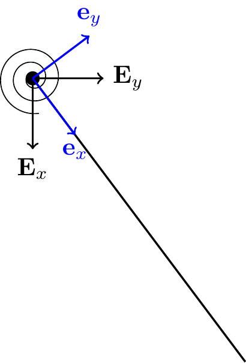
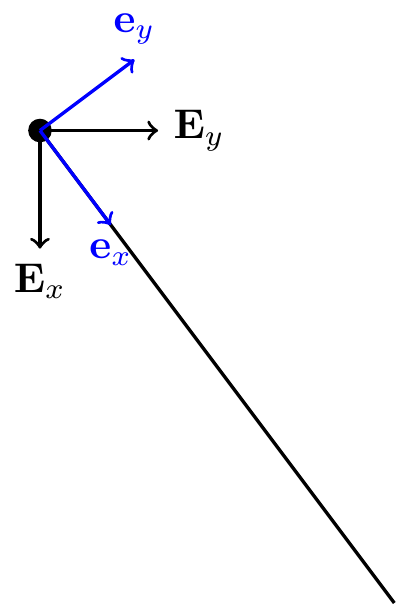

21 The Work-Energy Theorem for a Rigid Body
The Koenig decomposition for the kinetic energy of a rigid body is: \[\begin{align} T = \frac{1}{2}m{\bf v}_C\cdot{\bf v}_C+\frac{1}{2}{\bf H}^C\cdot\bomega. \end{align}\] In this class, \(\bomega = \omega{\bf E}_z\), so \(\frac{1}{2}{\bf H}^C\cdot\bomega = \frac{1}{2}I_{zz}\omega^2\).
For fixed point rotation about \(O\), the kinetic energy simplifies to: \[\begin{align} T = \frac{1}{2}{\bf H}^O\cdot\bomega = \frac{1}{2}I^O_{zz}\omega^2. \end{align}\]
The work-energy theorem for a rigid body is: \[\begin{align} \frac{dT}{dt} = {\bf F}\cdot{\bf v}_C+{\bf M}^C\cdot\bomega = \sum_{i=1}^N{\bf F}_i\cdot{\bf v}_i+{\bf M}_e\cdot\bomega. \end{align}\] Integrating from \(t_A\) to \(t_B\): \[\begin{align} T_B-T_A = W_{{\bf F},AB}+W_{{\bf M},AB} = \sum_{i=1}^N W_{{\bf F}_i,AB}+W_{{\bf M}_e,AB}, \end{align}\] where \[\begin{align} W_{{\bf F},AB} &= \int_{t_A}^{t_B}{\bf F}\cdot{\bf v}_C\,dt, & W_{{\bf M},AB} &= \int_{t_A}^{t_B}{\bf M}^C\cdot\bomega\,dt,\\ W_{{\bf F}_i,AB} &= \int_{t_A}^{t_B}{\bf F}_i\cdot{\bf v}_i\,dt, & W_{{\bf M}_e,AB} &= \int_{t_A}^{t_B}{\bf M}_e\cdot\bomega\,dt. \end{align}\] Notice: the work of a force uses the velocity of its point of application.
21.1 Koenig’s Decomposition
By definition, the kinetic energy of a rigid body is: \[\begin{align} T = \frac{1}{2}\int_{\mathcal{B}}{\bf v}\cdot{\bf v}\,\rho\,dv. \end{align}\] Using \({\bf v} = {\bf v}_C+\bomega\times\bpi\) with \(\bpi = {\bf r}-{\bf r}_C\): \[\begin{align} T = \frac{1}{2}\int_{\mathcal{B}}\lp{\bf v}_C\cdot{\bf v}_C+2{\bf v}_C\cdot(\bomega\times\bpi)+(\bomega\times\bpi)\cdot(\bomega\times\bpi)\rp dm. \end{align}\] The first term integrates to \(\frac{1}{2}m{\bf v}_C\cdot{\bf v}_C\), the second vanishes (since \(\int\bpi\,dm = {\bf 0}\)), and using the BAC-CAB identity for the third: \[\begin{align} T = \frac{1}{2}m{\bf v}_C\cdot{\bf v}_C+\frac{1}{2}{\bf H}^C\cdot\bomega. \end{align}\]
21.1.1 Fixed Point Rotation
For fixed point rotation about \(O\) (\({\bf v}_O = {\bf 0}\)), using the cyclic property of the scalar triple product: \[\begin{align} T &= \frac{1}{2}{\bf G}\cdot(\bomega\times{\bf r}_{C/O})+\frac{1}{2}{\bf H}^C\cdot\bomega = \frac{1}{2}({\bf r}_{C/O}\times{\bf G}+{\bf H}^C)\cdot\bomega = \frac{1}{2}{\bf H}^O\cdot\bomega. \end{align}\]
21.2 Derivation of the Work-Energy Theorem
From \(T = \frac{1}{2}m{\bf v}_C\cdot{\bf v}_C+\frac{1}{2}{\bf H}^C\cdot\bomega\), taking the time derivative and using the fact that \(\dot{\bf H}^C\cdot\bomega = {\bf H}^C\cdot\dot{\bomega}\) (verified by direct calculation): \[\begin{align} \dot{T} = m\dot{\bf v}_C\cdot{\bf v}_C+\dot{\bf H}^C\cdot\bomega. \end{align}\] Invoking the BoLM and BoAM: \[\begin{align} \dot{T} = {\bf F}\cdot{\bf v}_C+{\bf M}^C\cdot\bomega. \end{align}\]
21.3 Alternative Form
Using \({\bf F} = \sum_i{\bf F}_i\) and \({\bf M}^C = {\bf M}_e+\sum_i({\bf r}_i-{\bf r}_C)\times{\bf F}_i\), and noting that \({\bf v}_i = {\bf v}_C+\bomega\times({\bf r}_i-{\bf r}_C)\): \[\begin{align} \dot{T} = \sum_{i=1}^K{\bf F}_i\cdot{\bf v}_i+{\bf M}_e\cdot\bomega. \end{align}\] This form is often easier to use in applications: each force is dotted with the velocity of its point of application.
21.4 Conservative Moments
21.4.1 Torsional Spring
A torsional spring with stiffness \(K\) creates a couple \({\bf M}_S = -K\theta{\bf E}_z\). Its power is: \[\begin{align} {\bf M}_S\cdot\bomega = -K\theta\dot{\theta} = -\frac{d}{dt}\lp\frac{K\theta^2}{2}\rp. \end{align}\] Hence \(U = \frac{1}{2}K\theta^2\) for the torsional spring.
21.4.2 Constant Couple
A constant couple \({\bf M}_e = M_e{\bf E}_z\) has power \({\bf M}_e\cdot\bomega = M_e\dot{\theta} = -\frac{d}{dt}(-M_e\theta)\). Hence \(U = -M_e\theta\).
ImportantNote!
These results apply only for \(\bomega = \omega{\bf E}_z\). Constant couples are not conservative in general.
21.5 Examples
21.5.1 Bar Pendulum Fixed at Its End
A bar of length \(\ell\) and mass \(m\) pinned at its end. The energy is conserved: \[\begin{align} U &= -\frac{mg\ell}{2}\cos\theta,\\ E &= \frac{m\ell^2}{6}\dot{\theta}^2-\frac{mg\ell}{2}\cos\theta = \text{const}. \end{align}\]
21.5.2 Bar Pendulum With End Mass

Adding a dead mass \(m_e\) at the end: \[\begin{align} U = -\frac{mg\ell}{2}\cos\theta-m_e g\ell\cos\theta. \end{align}\]
21.5.3 Follower Force
If instead a follower force \({\bf P}\) is applied perpendicular to the bar at its end, this force is nonconservative (its direction actively changes with configuration). Energy is not conserved.
21.6 Energy Conservation
As with particles and systems of particles, this theorem can be used to establish conservation of the total mechanical energy of a rigid body, \(E = T + U\), when all work-doing forces and moments are conservative.
21.7 Summary
Koenig decomposition of kinetic energy: \[\begin{align} T = \tfrac{1}{2}m\mathbf{v}_C\cdot\mathbf{v}_C + \tfrac{1}{2}\mathbf{H}^C\cdot\boldsymbol{\omega}. \end{align}\] If a point \(O\) has zero velocity: \(T = \tfrac{1}{2}\mathbf{H}^O\cdot\boldsymbol{\omega}\).
Work–energy theorem for a rigid body: \[\begin{align} \frac{dT}{dt} = \mathbf{F}\cdot\mathbf{v}_C + \mathbf{M}\cdot\boldsymbol{\omega} = \sum_i \mathbf{F}_i\cdot\mathbf{v}_i + M_e\omega. \end{align}\]
21.8 Exercises
The following problems are from Set 23 – Work–Energy Theorem for Rigid Bodies.
1. [MKB 06-096] (ans. \(v_A=\sqrt{2gx\sin\theta}\), \(v_B=\sqrt{gx\sin\theta}\))
2. [MKB 06-099] (ans. \(\omega_{\max}=0.861\sqrt{g/b}\))
3. [06-108] (ans. (a) \(k=93.3\) N/m; (b) \(\omega=1.484\) rad/s CW)
4. [06-112] (ans. \(x=0.211l\), \(\omega_{\max}=1.861\sqrt{g/l}\) CW)
5. [06-118] (ans. \(v_A=\sqrt{3}\sqrt{\frac{M\theta}{m}-gb(1-\cos\theta)}\) right)